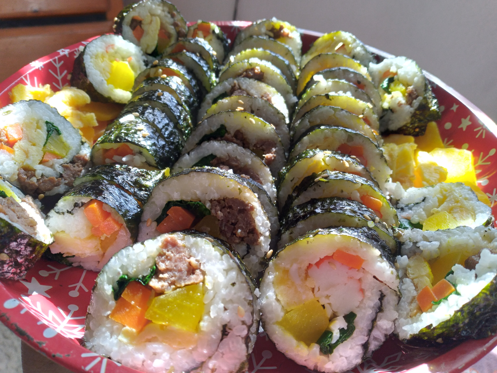
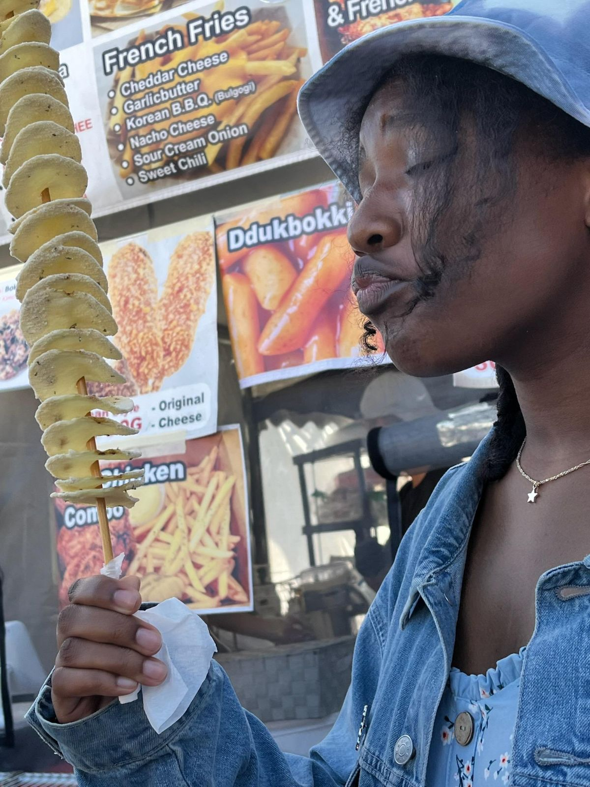
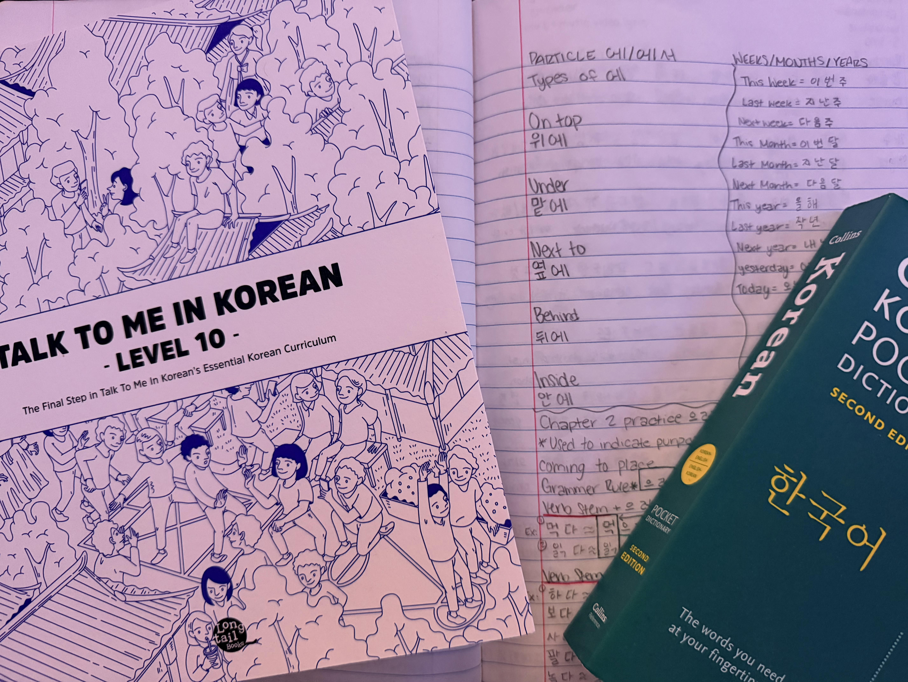
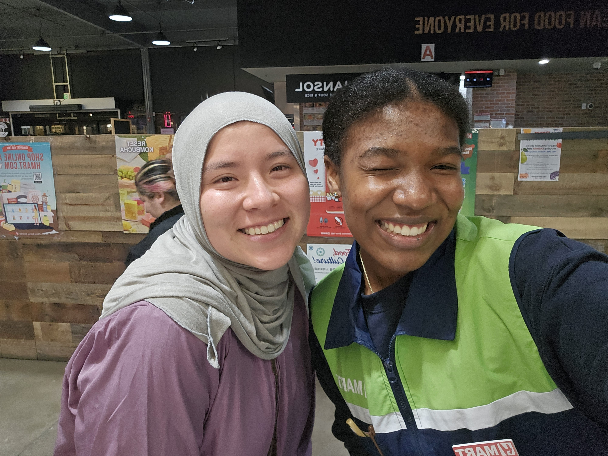
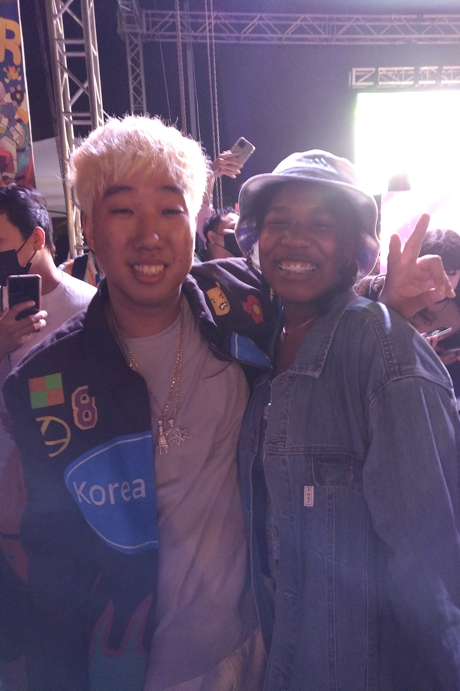

Tati's Korean Language Journey
From practicing greetings at Korean restaurants as a kid to getting ready to teach English in Korea, this is my story. Keep an eye out for bold Korean words along the way, because there's a quiz at the end!
안녕하세요! Welcome to My Journey.
Hi, I'm Tati! I've been learning Korean for over ten years, ever since I was a kid. I still remember how fun and exciting, but also nerve-wracking, it was to go out of my way to order Korean food or practice greetings and phrases at Korean restaurants and markets. Every small conversation I had felt like I was getting closer and closer to the learner I wanted to be.
This website is my way of sharing that journey with you. Whether you've just heard of Korean culture or you're genuinely curious about the language and its history, I hope my story shows you how cool Korean is, and how rewarding it can be when you put your mind and effort into it.
I know it can be hard to keep feeding a passion every single day, especially when life gets in the way. But I'm living proof that being persistent pays off. My ultimate dream is to teach English in Korea, and I'm getting closer every day.
So feel free, explore my journey, find out where I'm headed next, and see how many hidden Korean words you can spot. Who knows, maybe you'll discover a new passion of your own!
Snapshots




